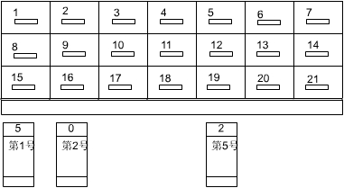
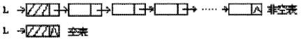
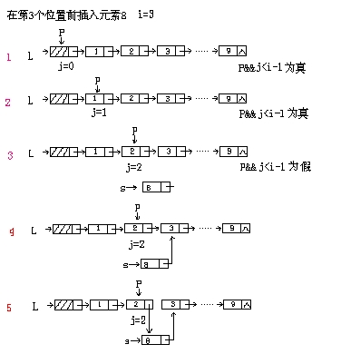
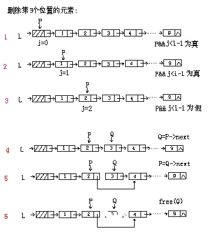

第八课
本课主题： 线性表的链式表示与实现
教学目的： 掌握线性链表、单链表、静态链表的概念、表示及实现方法
教学重点： 线性链表之单链表的表示及实现方法。
教学难点： 线性链表的概念。
授课内容：
一、复习顺序表的定义。
二、线性链表的概念：
以链式结构存储的线性表称之为线性链表。
特点是该线性表中的数据元素可以用任意的存储单元来存储。线性表中逻辑相邻的两元素的存储空间可以是不连续的。为表示逻辑上的顺序关系，对表的每个数据元素除存储本身的信息之外，还需存储一个指示其直接衙继的信息。这两部分信息组成数据元素的存储映象，称为结点。
头指针2000:1006 2000:1030 a3 2000:1040 a6 NULL a1 2000:1060 a4 2000:1050 a5 2000:1020 a2 2000:1010 数据域 指针域
<-数据域+指针域 例:下图是若干抽屉，每个抽屉中放一个数据元素和一个指向后继元素的指针，一号抽屉中放线性表的第一个元素，它的下一个即第二个元素的位置标为5，即放在第5个抽屉中，而第三个放在2号抽屉中。第三个元素即为最后一个，它的下一个元素的指针标为空，用0表示。

用线性链表表示线性表时,数据元素之间的逻辑关系是由结点中的指针指示的

二、线性链表的存储实现
struct LNODE{
ElemType data;
struct LNODE *next;
};
typedef struct LNODE LNode;
typedef struct LNODE * LinkList;
头指针与头结点的区别：
头指针只相当于结点的指针域，头结点即整个线性链表的第一个结点，它的数据域可以放数据元素，也可以放线性表的长度等附加信息，也可以不存储任何信息。
三、线性表的操作实现(类C语言)
1初始化操作
Status Init_L(LinkList L){
if (L=(LinkList *)malloc(sizeof(LNode)))
{L->next=NULL;return 1;}
else return 0;
}
2插入操作
Status ListInsert_L(LinkList &L,int i,ElemType e){
p=L,j=0;
while(p&&j<i-1){p=p->next;++j;}
if(!p||j>i-1) return ERROR;
s=(LinkList)malloc(sizeof(LNode));
s->data=e;s->next=p->next;
p->next=s;
return OK;
}//ListInsert_L

3删除操作
Status ListDelete_L(LinkList &L,int i,ElemType &e){
p=L,j=0;
while(p&&j<i-1){p=p->next;++j;}
if(!p->next||j>i-1) return ERROR;
q=p->next;p->next=q->next;
e=q->data;free(q);
return OK;
}//ListDelete_L

4取某序号元素的操作
Status GetElem_L(LinkList &L,int i,ElemType &e){
p=L->next,j=1;
while(p&&j<i){p=p->next;++j;}
if(!p||j>i) return ERROR;
e=p->data;
return OK;
}//GetElem_L
5归并两个单链表的算法
void MergeList_L(LinkList &La,LinkList &Lb,LinkList &Lc){
//已知单链线性表La和Lb的元素按值非递减排列
//归并后得到新的单链线性表Lc,元素也按值非递减排列
pa=La->next;pb=Lb->next;
Lc=pc=La;
while(pa&&pb){
if(pa->data<=pb->data){
pc->next=pa;pc=pa;pa=pa->next;
}else{pc->next=pb;pc=pb;pb=pb->next;}
}
pc->next=pa?pa:pb;
free(Lb);
}//MergeList_L
四、总结
1、线性链表的概念。
2、线性链表的存储
3、线性链表的操作